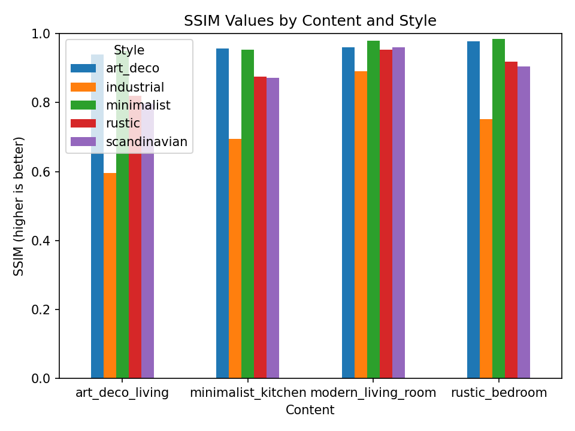
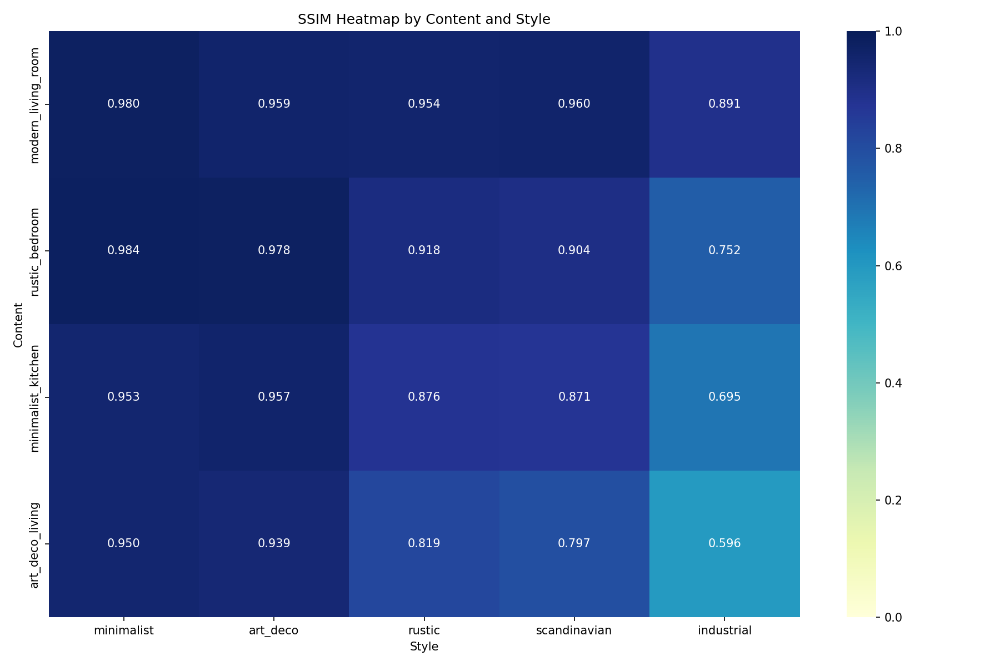
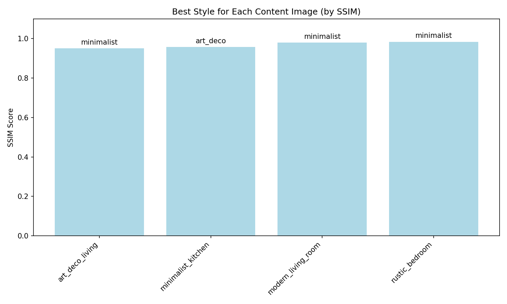
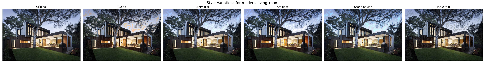
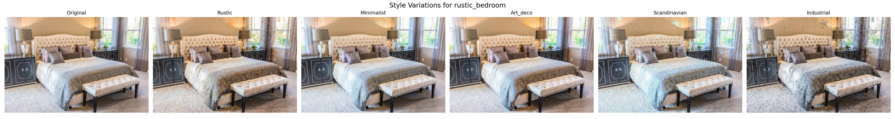
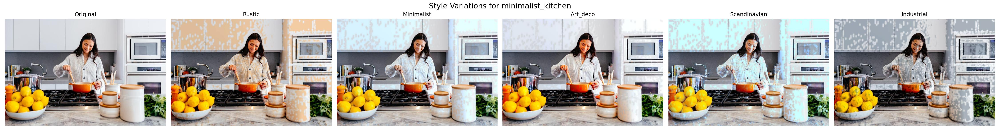
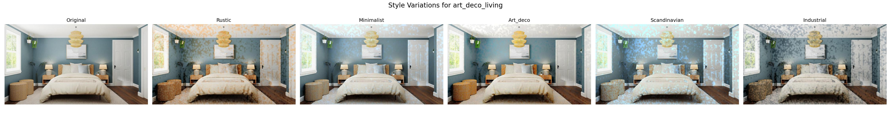

Generated: 2025-03-31 14:28:56
This report presents a comprehensive evaluation of interior style transfer results for 4 interior images with 5 different style variations.
The following interior images were used in this evaluation:
The following style variations were applied to each interior:
The following metrics were used to evaluate the quality of style transfer:

SSIM values for each content-style combination. Higher values indicate better structural similarity.

Heatmap of SSIM values across all content-style combinations.

The best style for each content image based on SSIM score.

| Style | SSIM ↑ | MSE ↓ | PSNR ↑ | Structure Preserved |
|---|---|---|---|---|
| minimalist | 0.9798 | 28.54 | 33.58 | ✅ |
| scandinavian | 0.9603 | 100.93 | 28.09 | ✅ |
| art_deco | 0.9595 | 49.22 | 31.21 | ✅ |
| rustic | 0.9536 | 95.70 | 28.32 | ✅ |
| industrial | 0.8914 | 135.76 | 26.80 | ✅ |

| Style | SSIM ↑ | MSE ↓ | PSNR ↑ | Structure Preserved |
|---|---|---|---|---|
| minimalist | 0.9842 | 40.11 | 32.10 | ✅ |
| art_deco | 0.9777 | 39.38 | 32.18 | ✅ |
| rustic | 0.9176 | 193.75 | 25.26 | ✅ |
| scandinavian | 0.9043 | 210.39 | 24.90 | ✅ |
| industrial | 0.7517 | 393.23 | 22.18 | ❌ |

| Style | SSIM ↑ | MSE ↓ | PSNR ↑ | Structure Preserved |
|---|---|---|---|---|
| art_deco | 0.9573 | 78.57 | 29.18 | ✅ |
| minimalist | 0.9531 | 123.72 | 27.21 | ✅ |
| rustic | 0.8759 | 470.90 | 21.40 | ✅ |
| scandinavian | 0.8713 | 343.63 | 22.77 | ✅ |
| industrial | 0.6950 | 767.65 | 19.28 | ❌ |

| Style | SSIM ↑ | MSE ↓ | PSNR ↑ | Structure Preserved |
|---|---|---|---|---|
| minimalist | 0.9505 | 77.14 | 29.26 | ✅ |
| art_deco | 0.9394 | 67.55 | 29.83 | ✅ |
| rustic | 0.8193 | 287.48 | 23.54 | ✅ |
| scandinavian | 0.7965 | 367.44 | 22.48 | ❌ |
| industrial | 0.5960 | 539.78 | 20.81 | ❌ |
Based on the evaluation metrics, the following style combinations are recommended:
This evaluation demonstrates the effectiveness of the Interior Style Transfer POC in generating style variations while preserving architectural structure. The metrics show that the style transfer process maintains good structural similarity while successfully applying the target styles.